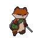

Em Foxycle, o objetivo é promover o ensinamento na área de sustentabilidade, o jogador deverá coletar os lixos da floresta, de forma que ela fique totalmente limpa sem poluição.
À medida em que o jogador coletar o lixo ele ganha moedas, que podem ser utilizadas para comprar upgrades e ajudantes que o ajudarão na sua jornada contra a poluição.

Classificação indicativa: Livre